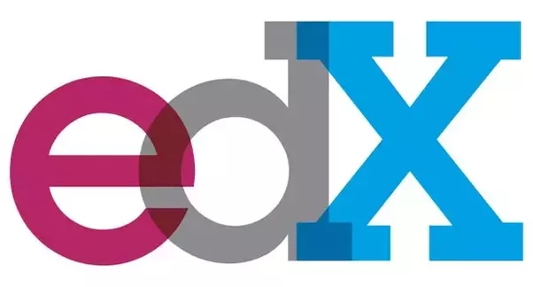
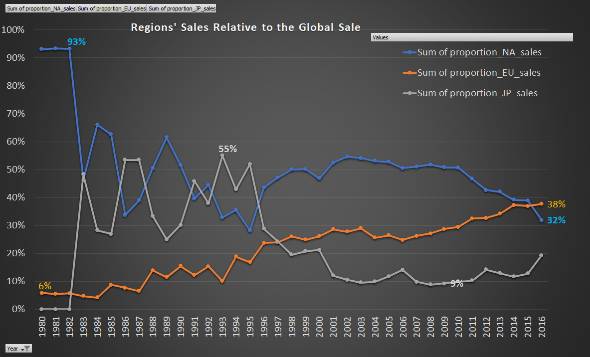

The food aggregator company has stored the data of the different orders made by the registered customers in their online portal. They want to analyze the data to draw some actionable insights for the business. In this project, I Designed and implemented a Python-based data analysis solution for FoodHub, a food aggregator company. Conducted analysis on customer orders to determine the demand for different restaurants and enhance customer experience. Achievements include increased revenue and customer satisfaction by using data-driven decision-making. Approach involved data cleaning, visualization, and modeling to identify key trends and patterns in the data. Implemented recommendations for improvements based on findings, such as optimizing restaurant offerings and delivery routes.

As a data scientist, I worked on a project for New-Wheels, a vehicle resale company that launched an app with end-to-end services for pre-owned vehicle sales. The app provides after-sales service feedback from customers, ensuring the quality of the company's services.
However, the company was experiencing a decline in sales and negative customer feedback online, leading to a decrease in new customers. The CEO requested a quarterly report with key metrics to assess the health of the business and make necessary decisions.
My objective was to import a dump file containing various tables from the company's database and use the data to answer the leadership's questions. I analyzed the data and created a quarterly business report for the CEO, presenting key metrics and insights to support strategic decisions.
Through my work on this project, I demonstrated my skills in data analysis, report writing, and business strategy

Gamers' Arena is a website that tracks video game releases, sales, and performance across various platforms and genres. To help the company's director make data-driven decisions on the subscription model, I designed an interactive dashboard. This dashboard allowed the director to monitor key performance indicators (KPIs) related to the subscription model, make data-driven decisions, and track the impact of these decisions on the company's overall performance.

EdX is an American massive open online course provider created by Harvard and MIT. It hosts online university-level courses in a wide range of disciplines to a worldwide student body, including some courses at no charge. The analytical team will do research in how people uses its platform.
.jpg)
Uber Technologies, Inc. is an American multinational transportation network company based in San Francisco and has operations in over 785 metropolitan areas with over 110 million users worldwide. As a Data Analist I explored and analyzed dataset using Python and provided data-driven report to the marketing and sales teams to help in the growth of the business.
Advertising is a type of marketing communication used to promote or sell products or services. Advertising is usually paid by sponsors and viewed through various media such as websites, apps, emails, and other offline communications. Android is the mobile operating system running on Google OS with about 69% of the market share worldwide. The Google Play Store is the Android app store used to install Android Apps.Zoom Ads is an advertising agency that wants to perform an analysis on the data of the google play store. They need to understand the trend of applications available on the google play store so that they can decide to focus on promoting advertisements on particular applications which are trending in the market and can lead to maximum profit.I analyzed detaile information on apps in the Google Play Store I explored and analyzed dataset using Python and provided data-driven report to the teams.

GameCo, a video game company, planned to develop new games; however, it lacked clear understanding about its global sale databases. As part of this project, I explored and analyzed complex datasets and provided insights on how GameCo new games might fare in the market.
Hello, I'm TEWODROS, a skilled data analyst with a BSc Degree in Computer Engineering and a Postgraduate degree in Data Analytics from UT-Texas University.
With over 4 years of experience in data analysis and related positions, I excel in cleaning, exploring, analyzing, and visualizing complex datasets.
I am committed to expanding my knowledge and expertise in data analytics and technology to drive better data-driven decisions.
With strong attention to detail and communication skills,
Currently, I am looking for a role which allows me to apply my knowledge and skills.
I am confident in helping your organization achieve its goals.